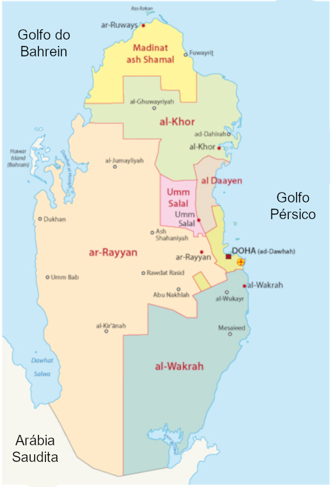

A Copa do Mundo do Catar acontece entre 21 de novembro e 18 de dezembro. O Mundial será disputado no final do ano por conta das altas temperaturas no Catar Após quase dois meses do sorteio dos grupos, a lista de 32 seleções classificadas para a Copa do Mundo de 2022 está completa. Completaram o grupo de países que jogarão a Copa no Catar as seleções de Costa Rica e Austrália. As duas seleções jogaram a repescagem internacional para o Mundial.
Catar ou Qatar é um emirado localizado no Oriente Médio. O Catar é considerado um país com uma das maiores economias do planeta. Catar, também chamado de Qatar (em inglês), é um país do Oriente Médio. Oficialmente é conhecido como um emirado, sendo, portanto, um território regido por um emir (título de nobreza equivalendo a príncipe no Ocidente). É um dos países mais ricos do mundo, tendo no poder a família Al Thani, dinastia reinante desde 1825. O governo do país é uma monarquia constitucional e ao mesmo tempo uma monarquia absolutista. A língua oficial no país é árabe, e o inglês é o segundo idioma dominante. A religião predominante no Catar é o islamismo, mas há também cristãos, hindus e budistas.
O Catar localiza-se na Ásia Ocidental, sendo uma península (extensão de terra cercada por água em quase todos os lados) que abrange uma área de 11.610 km2 até o norte do Golfo Pérsico, fazendo fronteira com a Arábia Saudita e separado do país Bahrein pelo golfo.
A população do Catar é formada por mais de 2,5 milhões de habitantes, mas o que chama a atenção é que o número de qataris é muito menor que a metade.Estima-se que cerca de 75% dos moradores do país são nascidos em outros lugares do planeta. O número de qataris (nascidos no país) seria pouco superior a 300 mil habitantes. Também chama a atenção a ocupação das cidades no país. Cerca de 90% dos habitantes moram na área urbana, o que também contribui para que o Catar tenha um dos Índices de Desenvolvimento Urbano (IDH) mais altos do planeta.
O maior impulso da economia do Catar é o petróleo, com suas enormes reservas. Em 1974, o Qatar Petroleum assumiu a exploração do combustível fóssil, mudando radicalmente a economia do país, que antes não possuía um grande histórico de riqueza. Anterior à exploração do petróleo, o Catar tinha como fonte econômica a pesca e a extração de pérolas. Atualmente, é um dos países mais ricos do mundo e, segundo o Relatório Global de Competitividade, é uma das nações com a menor carga tributária do mundo. A economia baseia-se, especialmente, na exportação de petróleo e gás natural, que juntos representam em torno de 50% do Produto Interno Bruto do país. De acordo com o Observatório da Complexidade Econômica, o Catar possui uma balança comercial positiva com saldo de US$30,7 bilhões. Isso ocorre porque há mais exportações do que importações. Os principais produtos exportados são o petróleo, petrolíferos refinados e polímeros de etileno. Já as importações mais significativas são de aviões, carros, helicópteros e turbinas a gás.